මෙම Controller Board එක WS2811, WS2812 වැනි RGB LED Strips මඟින් ආලෝක
රටා සෑදීම සඳහා නිර්මාණය කර ඇත.
මීට අමතරව මෙම Board එකෙහි පහත සඳහන් විශේෂාංග අන්තර්ගත වේ
✨ හැඳින්වීම
📒 පටුන
1) ප්රධාන කොටස් හැඳින්වීම

01
02
04
05
07
09
10
15
16
Power Connector
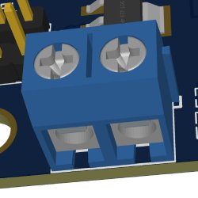
Controller Board එක ක්රියාත්මක වීමට අවශ්ය විදුළි සැපයුම මෙම
Connector එක හරහා ලබා දිය හැක. මෙම Board එක 5v හෝ 12v මගින්
ක්රියාත්මක කල හැකි අතර, 12v සපයන්නේ නම්
5v/12v Switching Header
එක 12v හරහා සම්බන්ධ කර ඇති බවර තහවුරු කරගන්න. තවද
LED Strip Out 1 හරහා
විදුළිය සපයන්නේ නම් මෙම Connector එක හරහා විදුලිය සැපයීම
අවශ්ය නොවේ.
Power Indicator LED

Controller Board එකට අවශ්ය පරිදි විදුළි සැපයුමක් ලැබී ඇති බව
මෙම LED එක මගින් පෙන්වයි
5v/12v Switching Headers
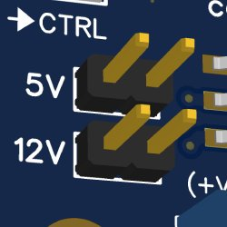
මෙම Headrs හරහා යොදා ඇති Jumper එක මගින් Board එකට ලැබෙන
වෝල්ටීයතාව 5v ද 12v ද යන්න සැකසිය හැක.
මෙම header එක 5v ලෙස සකසා 12v විදුළි සැපයුමක් ලබා දීම නොකල
යුතුයි
Master Control In

Slave Mode එකෙන් ක්රියාත්මක වන Board එකකට ක්රියාත්මක වීමට
අවශ්ය Controlling Signal ලබාගැනීම සඳහා මෙම Connector එක භාවිතා
වේ. මෙම Connector එකට ලැබන Signals ඒ ආකාරයෙන්ම
Master Control Out
Connector එක හරහා තවත් Slave Mode Board එකකට ලබා දිය හැක.
Mode Indicator LED
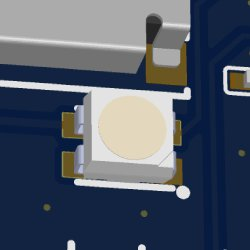
Board එක ක්රියාත්මක වන ආකාරය(Mode) පිළිබඳව මෙම LED එක මගින්
පෙන්වනු ලබයි
RP2040 Microcontroller
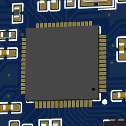
මෙය පසුගිය වසර කිහිපය තුල අතිශයින් ජනප්රිය වූ
Raspberry pi pico
Board එකෙහි භාවිතා වන Microcontroller එක වන අතර, ඉතා පසුවෙන්
භාවිතයට මෙන්ම Programm කරගැනීමට හැකි පරිදි නිර්මාණය කර තිබේ. මෙම
Controller Board එක ද
pico
Board එකක් ආකාරයෙන්ම Programm කිරීමට හැකි වන ආකාරයෙන් නිර්මාණය
කර තිබේ. Micropython හරහා මෙන්ම Arduino IDE එක හරහා ද Programm
කල හැකි අතර, Programming පිලිබඳ දැනුමක් නැති අයට පවා අප විසින්
නිකුත් කල ඇති Firmwares ඉතා පහසුවෙන් Install කරගෙන භාවිත කල හැක.
TF Card Slot
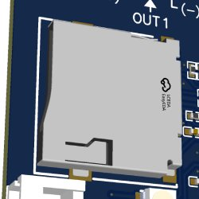
LED රටා ඇතුලත් කර ඇති Micro-SD Cards මෙම slot එක හරහා සම්බන්ධ කල
හැකි අතර, මෙම board එකට Micro-SD Adapter එකක් ලෙස ද ක්රියාත්මක
විය හැකි නිසා වෙනම Adapter නොමැතිව වුවද පරිඝණකය හරහා Card එකට
රටා ඇතුලත් කරගැනීමට හැකියාව ඇත.
LED Strip Out 1 + Power In
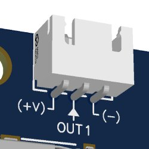
LED strip එකක්(LED 2000 ක් දක්වා) ක්රියාත්මක වීමට අවශ්ය
signals ලබා දීම සඳහා මෙම connector එක භාවිතා වන අතර, Board එකට
ක්රියාත්මක වීමට අවශ්ය විදුලිය සැපයීමට ද මෙම connector එක
භාවිතා කල හැක. මෙම connector එකට වයර් සම්බන්ධ කල යුතු ආකාරය
පිළිබඳ රූපසටහනක් මෙතනින් දක්වා ඇත. තවද, මෙම connector එක
හරහා විදුළිය සපයන්නේ නම්,
Power Connector
එක හරහා විදුළිය සැපයීම අවශ්ය නොවේ.
LED Strip Out 2
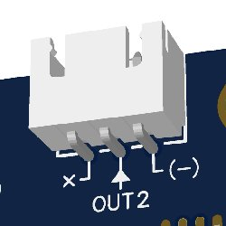
තවත් LED strip එකක්(LED 2000 ක් දක්වා) සම්බන්ධ කිරීමට අවශ්ය නම්
මෙම Connector එක භාවිතා කල හැකි අතර,
LED Strip Out 1 එකට හා
මෙම Connector එකට එකිනෙකට වෙනස් රටා 2ක් ක්රියාත්මක කිරීමේ
හැකියාව ඇත.
LED Strip Out 1 හි
රටාවම මෙම connector එක හරහා ලබාගැනීමට අවශ්ය නම්
Duplicate Out
ස්විචය භාවිතා කල හැක. තවද, මෙම connector එක හරහා board එක
ක්රියාත්මක වීමට අවශ්ය විදුලිය සැපයීමයට නොහැක.
Signal Out Indicator
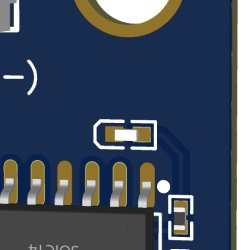
රටා වලට අදාල Signals, Board එක හරහා නිකුත් කෙරෙන විට මෙම LED එක
දැල්වේ.
3.3v to 5v Signal Converter
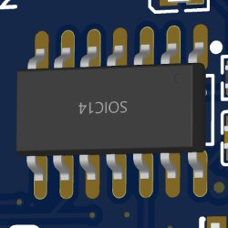
මෙම chip එක මගින්
RP2040
Microcontoller එක හරහා නිකුත් කරන 3.3v signals 5v signals බවට
පරිවරර්තනය කරයි. මෙමගින් Signal වලට වඩා වැඩි ස්ථායීතාවක් ලබා
දෙයි.
Arduino UNO
හැර බොහොමයක් Microcontrollers වලින් නිකුත් කල හැක්කේ 3.3V Signal
එකකි. නමුත්,
WS2811,
WS2812
වැනි chips සහිත RGB LED Strips වල Datasheet වල දක්වා ඇති පරිදි
Signal Input එක අවම වශයෙන්, 0.7 VDD හෙවත් 3.5v වත් විය
යුතුය (0.7 x 5v). සාමාන්ය භාවිතයේදී Microcontroller එකෙන්
නිකුත් කරන 3.3V Signal එක කෙලින්ම LED Strip වලට දිය හැකි වුවද,
වයර් හරහා වැඩි දුරකට Signal යැවීමට සිදුවන අවස්ථා වල එම වයර් වල
ප්රතිරෝධය වැනි කරුණු මත Signal පහසුවෙන් විකෘති වීමට ඉඩ ඇත
Duplicate Out Toggle Switch
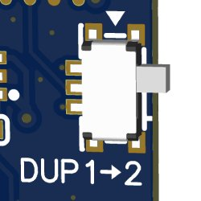
මෙම ස්විචය මගින් OUT 1 හරහා නිකුත් වන Signal එකම OUT 2 හරහා ත්
ලබාගත හැකිය. එකම රටාව LED Strips 2ක් හරහා ලබා ගැනීමට මේ මඟින්
හැකි වේ. OUT 1 හා OUT 2 මගින් එකිනෙකට වෙනස් Signal 2 ක් ලබාගන්නා
අවස්ථා වලදී මෙම ස්විචය OFF කර තිබිය යුතුයි.
Master Controller Out/Forward
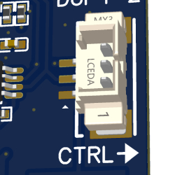
Master Mode එකෙන් ක්රියාත්මක වන අවස්ථාවකදී, Slave Boards වලට
රටා මාරු වීමට අදාල Signals මෙම Connector එක හරහා නිකුත් කරයි. මේ
හරහා එකිනෙකට වෙනස් රටා සහිත Boards කීපයක් එකට සම්බන්ධ කර ඒවා
සියල්ලහිම රටා මාරු වීම Master Board එකේ Timing අනුව ක්රියාත්මක
වන පරිදි සකසාගත හැක. තවද, Board එක ක්රියාත්මක වන්නේ Slave Mode
එකෙන් නම්, Master Signal එක ඊළඟ Slave Board එකට Forward කිරීමට
මෙම Connector එක භාවිතා කල වේ.
Firmware Install/Mount SD Card
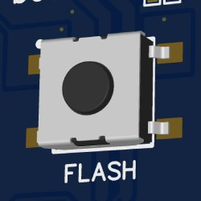
Board එකට ක්රියාත්මක වීමට අවශ්ය Firmware එක(Master/Slave Mode)
Install කරගැනීමට හා, Micro SD Adapter එකක් ලෙස ක්රියාත්මක
කිරීමට මෙම Button එක භාවිතා වේ.
Restart Board
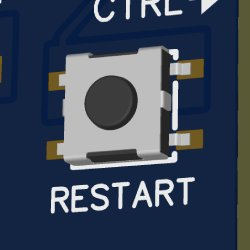
Board එක ක්රියාත්මක වෙමින් පවතින අවස්ථාවකදී, Restart කරගැනීමට
මෙම Button එක භාවිතා වේ.
Type-C Connector
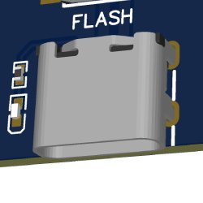
USB-C කේබල් එකක් හරහා පරිඝණකයකට සම්බන්ධ කිරීමට.
3) Modes / ක්රියාත්මක කල හැකි ආකාර
Flash Mode
Board එක ක්රියාත්මක වීමට අවශ්ය Firmware එක Install කරගැනීමට නම්
පළමුව Board එක Flash Mode එකෙන් පරිඝණකයක් හා සම්බන්ධ කල යුතු වේ.
මේ සඳහා පහත පියවර අනුගමනය කරන්න.
* Flash Mode එකේදී Mode Indicator LED එක ක්රියාත්මක නොවේ
මේ සඳහා පහත පියවර අනුගමනය කරන්න.
- Flash බොත්තම ඔබාගෙන සිටින අතරතුර USB-C කේබල් එක සම්බන්ධ කරන්න. එවිට USB Flash Drive එකක් ආකාරයෙන් පරිඝණකය හා සම්බන්ධ වේ.
- ඔබ විසින් Download කරගත් Firmaware එක(.uf2 file) USB Flash Drive එකට Copy කරන්න
- File එක සාර්ථකව Copy වූ පසු Board එක ස්වයංක්රීයව Restart වන අතර ඉන් පසුව ඔබ විසින් Install කරන ලද Firmware එකට අනුව ක්රියාත්මක වේ.
* Flash Mode එකේදී Mode Indicator LED එක ක්රියාත්මක නොවේ
Micro SD Adapter Mode
මෙම ආකාරයෙන් ක්රියාත්මක වීමට නම් පළමුව,
-
Board එකට Pixel-LED-Studio Firmware එක Install කර තිබිය
යුතුයි.
(Micropython හෝ Arduino භාවිතයෙන් Program කරන විට Micro SD Adapter Mode එක ක්රියාත්මක නොවේ) - Fat-32 ආකාරයෙන් Format කරන ලද Micro SD Card එකක් සම්බන්ධ කර තිබිය යුතුයි
- සාමාන්ය පරිදි USB-C කේබල් එකක් හරහා පරිඝණයට සම්බන්ධ කරන්න
- Flash බොත්තම එක් වරක් ඔබන්න
Master/Standalone Mode
Controller Board එකක් පමණක් භාවිතා වන විට මෙම ආකාරයෙන් ක්රියාත්මක
කල යුතුය. මේ ආකාරයෙන් ක්රියාත්මක වීමට නම් Board එකට Firmware
Install කරන විට Master Mode ලෙස සඳහන් කර ඇති Firmware එක Install
කරගන්න.
Slave Mode
Controller Board එකකට වැඩි ගනනක් අවශ්ය වන අවස්ථා වල (LED 4,000 ක්
හෝ ඊට වැඩි) රටාව කොටස් කිහිපයක් ලෙස සකස් කර එම කොටස් වෙන වෙනම
Board කිහිපයක් අතරේ බෙදා දී ඉන්පසුව එම Boards සියල්ලම එකම රටාවේ
කොටස් ලෙස සමාන්තරව ක්රියාත්මක කරවීමට මෙම Mode එක භාවිතා වේ.
මෙහිදී පළමු Board එක Master Mode එකෙන් ක්රියාත්මක විය යුතු අතර ඉතිරි Board සියල්ලම Slave Mode එකෙන් ක්රියාත්මක වේ.
Master Board එක සාමාන්ය පරිදි ක්රියාත්මක වන අතර LED රටා වල සෑම පියවරකටම පෙර Master Out Connector එක හරහා එයට සම්බන්ධ වී ඇති සියළුම Slave Boards වලට Signal එකක් නිකුත් කරනු ලබයි.
Slave Mode එකෙන් ක්රියාත්මක වන Boards සියල්ලම, LED රටාවේ ඊළඟ පියවර නිකුත් කිරීමට Master Board එක මඟින් නිකුත් කරනු ලබන Signal එක ලැබෙන තෙක් බලා හිදී.
මේ ආකාරයෙන් ක්රියාත්මක වන විට Boards සියල්ලම එකම වේලාවේදී LED රටා පියවර අතර මාරුවීම සිදුවන අතර කිසිම ආකරයක Timing වල වෙනසක් සිදු නොවේ.
Master Signal එකක් නොමැතිව Slave Boards වලට තනි තනිව ක්රියාත්මක විය නොහැක. එසේ ක්රියාත්මක වීමට අවශ්ය නම් එම Boards වලට Master Mode Firmware එක Install කරගත යුතුය.
Boards එකකට වඩා වැඩි ගණනක් Master / Slave ආකාරයෙන් ක්රියාත්මක කිරීමට පහත පියවර අනුගමනය කරන්න.
ඒ සඳහා පලමු Board එක හැර අනෙක් Board සියල්ලටම Firmware Install කරන විට Slave Mode ලෙස සඳහන් කර ඇති Firmware එක Install කරගන්න.
මෙහිදී පළමු Board එක Master Mode එකෙන් ක්රියාත්මක විය යුතු අතර ඉතිරි Board සියල්ලම Slave Mode එකෙන් ක්රියාත්මක වේ.
Master Board එක සාමාන්ය පරිදි ක්රියාත්මක වන අතර LED රටා වල සෑම පියවරකටම පෙර Master Out Connector එක හරහා එයට සම්බන්ධ වී ඇති සියළුම Slave Boards වලට Signal එකක් නිකුත් කරනු ලබයි.
Slave Mode එකෙන් ක්රියාත්මක වන Boards සියල්ලම, LED රටාවේ ඊළඟ පියවර නිකුත් කිරීමට Master Board එක මඟින් නිකුත් කරනු ලබන Signal එක ලැබෙන තෙක් බලා හිදී.
මේ ආකාරයෙන් ක්රියාත්මක වන විට Boards සියල්ලම එකම වේලාවේදී LED රටා පියවර අතර මාරුවීම සිදුවන අතර කිසිම ආකරයක Timing වල වෙනසක් සිදු නොවේ.
Master Signal එකක් නොමැතිව Slave Boards වලට තනි තනිව ක්රියාත්මක විය නොහැක. එසේ ක්රියාත්මක වීමට අවශ්ය නම් එම Boards වලට Master Mode Firmware එක Install කරගත යුතුය.
Boards එකකට වඩා වැඩි ගණනක් Master / Slave ආකාරයෙන් ක්රියාත්මක කිරීමට පහත පියවර අනුගමනය කරන්න.
- LED රටා නිර්මාණය කරන විට
- Flash බොත්තම එක් වරක් ඔබන්න
ඒ සඳහා පලමු Board එක හැර අනෙක් Board සියල්ලටම Firmware Install කරන විට Slave Mode ලෙස සඳහන් කර ඇති Firmware එක Install කරගන්න.
Single OUT Mode
මෙය, Board එක සාමාන්යයෙන් ක්රියාත්මක වන ආකාරයයි. මෙහිදී ආලෝක රටා
ඇතුලත් .bin file 1 ක් හරහා LED Strip
1 ක් ක්රියාත්මක කිරීම සිදුවේ. මෙම Mode එකේදී සෑමවිටම Out 1
හරහා LED Strip එකට අදාල Signals නිකුත් කරයි.
Out 1 හරහා නිකුත් වන Signal එකේම Copy එකක් Duplicate Out Toggle ස්විචය හරහා Out 2 මඟින් ලබාගත හැකිය.
මෙය
Out 1 හරහා නිකුත් වන Signal එකේම Copy එකක් Duplicate Out Toggle ස්විචය හරහා Out 2 මඟින් ලබාගත හැකිය.
මෙය
Dual OUT Mode
මෙහිදී Out 1 හා Out 2 හරහා එකිනෙකට වෙනස් ආලෝක රටා ලබාගැනීමට හැකි
වේ. මේ සඳහා .bin files 2 ක් එකට එකතු කිරීම මඟීන් සාදාගත් .bin file
එකකින් Out 1 හා Out 2 වෙන වෙනම ක්රියාත්මක වේ
2) භාවිතයට උපදෙස්
Firmware Install කිරීම
- Pixel-LED-Controller Firmware එක මෙතනින් Download කරගන්න
-
Flash බොත්තම ඔබාගෙන සිටින අතරතුර USB Cable එකක් හරහා පරිඝණකයට
සම්බන්ධ කරගන්න
(මෙවිට Controller Board එක පරිඝණකයට USB Drive එකක් ආකාරයෙන් සම්බන්ධ වේ) -
Download කරගත් Firmware File එක Controller Board එකට Copy
කරන්න.
(Board එකට Firmware එක Copy වීමෙන් අනතුරුව USB Drive එක පරිඝණකයෙන් විසන්ධි වන අතර Controller Board එකට Firmware එක Install වීමෙන් පසු Restart වීමක් සිදුවේ)
Micro SD Card එක සූදානම් කරගැනීම
- Micro-SD Card එක Fat-32 ආකාරයට Format කරගන්න.
- Micro-SD Card එක Controller Board එකට සම්බන්ධ කරන්න.
LED රටා ඇතුලත් කිරීම
- Controller Board එක USB Cable එකක් හරහා පරිඝණකයට සම්බන්ධ කරගන්න.
-
Controller Board එක ක්රියාත්මක වීමෙන් පසුව Flash Button එක
එක් වරක් ඔබන්න.
(මෙවිට Controller Board එක පරිඝණකයට USB Drive එකක් ආකාරයෙන් සම්බන්ධ වේ) - ඔබ විසින් සූදානම් කරගත් රටා ඇතුලත් .bin File එක Controller Board එකට Copy කරන්න.
- .bin File එක Copy වීමෙන් පසුව Board එක Restart කරන්න.
විදුලි සැපයුම
- Power Switching Header එක නිවැරදි ආකාරයට සකසා ගන්න
-
Power Connector එක හරහා හෝ, LED Strip Out 1 හරහා Controller
Board එකට විදුලිය සපයන්න.
(USB Cable එක හරහා ලැබෙන විදුලි සැපයුමෙන් ද Controller Board එකට ක්රියාත්මක විය හැකිය)
LED Strip වලට සම්බන්ධ කිරීම
- Controller Board එක USB Cable එකක් හරහා පරිඝණකයට සම්බන්ධ කරගන්න.
4) LED අති විශාල ප්රමාණයක් දක්වා..
Firmware Install කිරීම
Micro SD Card එක සූදානම් කරගැනීම
විදුලි සැපයුම
LED රටා ඇතුලත් කිරීම
LED Strip වලට සම්බන්ධ කිරීම
4) Program කිරීම සඳහා උපදෙස්
Standalone Mode
Master Mode
Slave Mode
Single OUT Mode
Dual OUT Mode
5) වෙනත් තොරතුරු
Standalone Mode
Master Mode
Slave Mode
Single OUT Mode
Dual OUT Mode